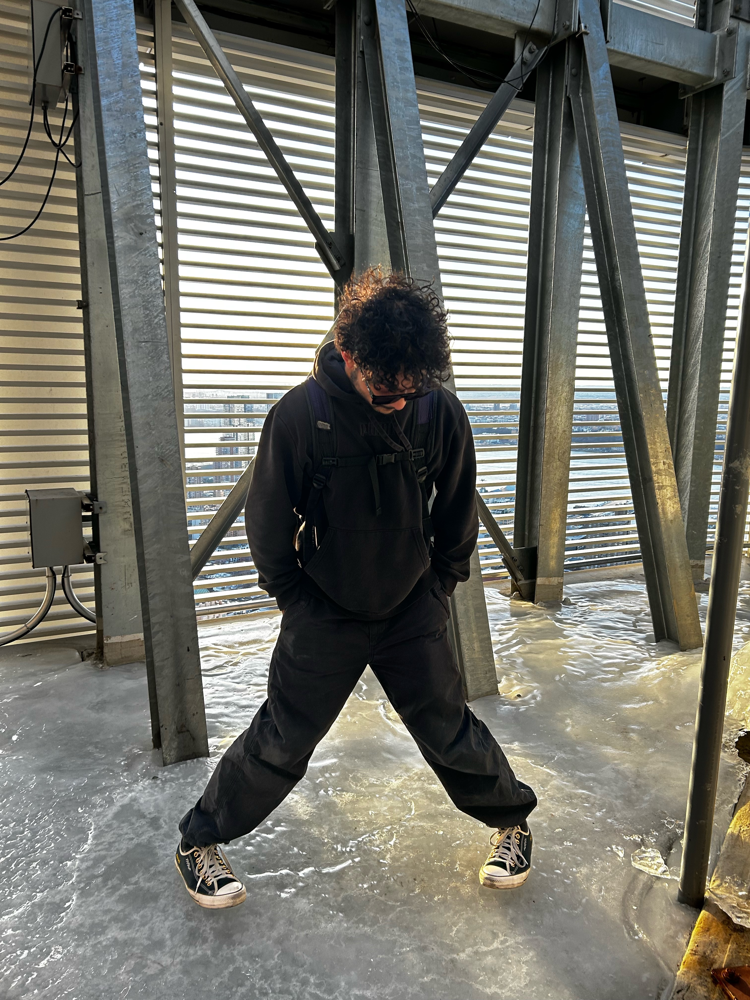

Saqibs Webpage
Pesenting Saqib Ahmed's statement below
My work primarily focuses on the memorable montages of family vacations within the 50 states or out the country. Yea it may seem basic to mashup footage and add a song to it to make a cringe video, however to me its a memorable moment that I can always reopen to whenever I miss my family. I always use the tools I have like my drone, my action camera, my phone, and of course the external hard drives and editing softwares to make everything come to a point. It always ends up giving people a tear drop of joy seeing all the memories made as time flew by. My motto when filming and taking photos is mostly that it's not about the place, it's about the people that create the story.
Below is a link to the writing responsed to the readings I have done and the link after is my photoshopped work.
Homework 1
Photoshop
Want to see my photography? Click the link below!
Photography by Saqib Ahmed
Hi I'm Saqib You're local bangladeshi smelly boy lol. I love sharing food and meeting people that have the same taste as me.